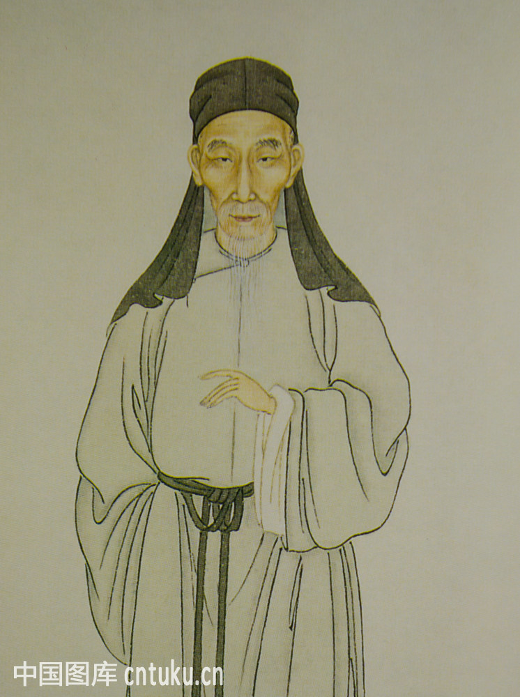
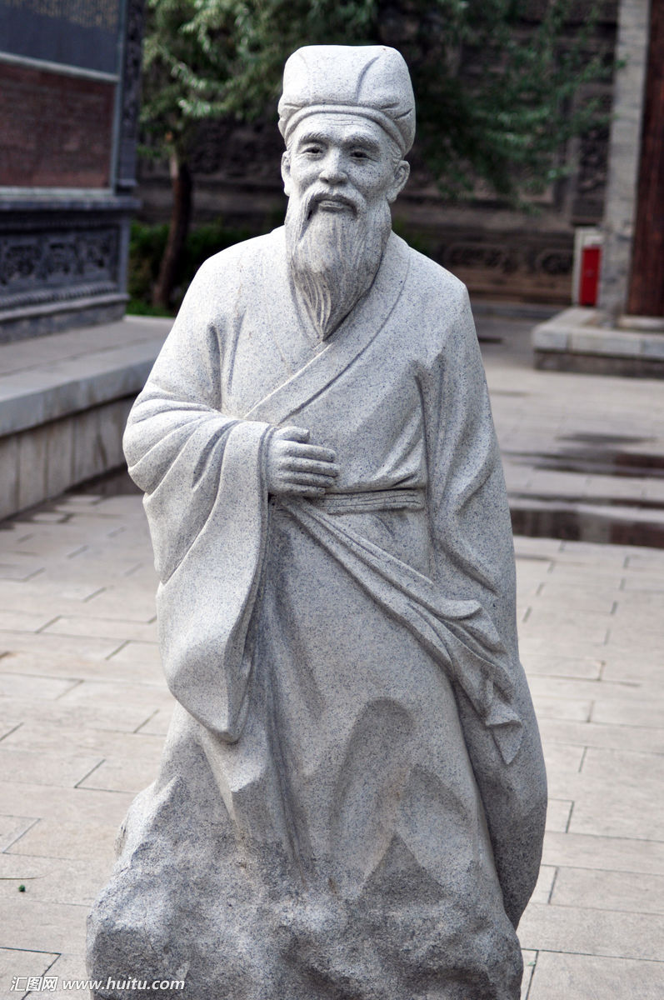
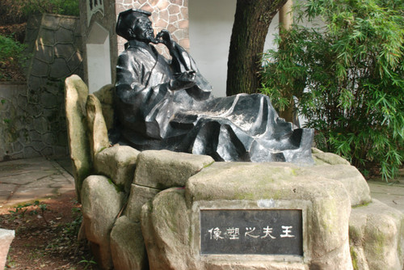
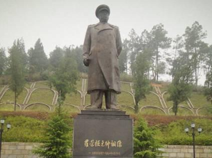
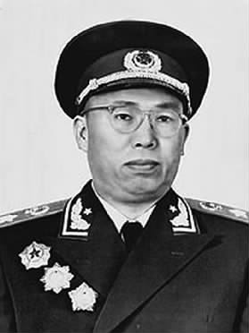
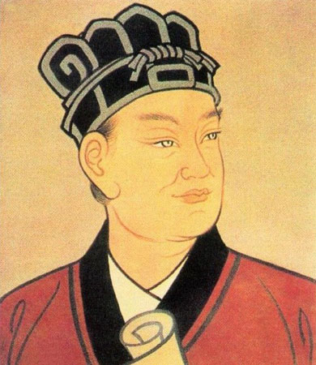
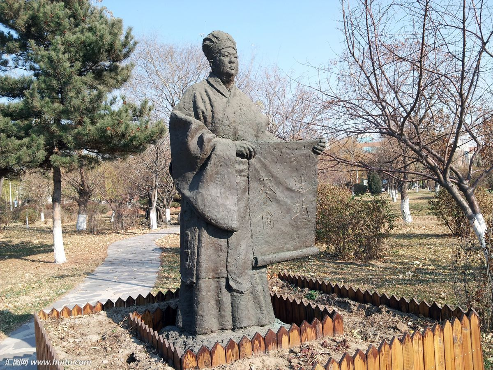

| 王夫之 | ||||
|---|---|---|---|---|
|   | 王夫之（1619年10月7日－1692年2月18日），生于万历四十七年九月初一子时，卒于壬申正月初二午时。字而农，号姜斋、又号夕堂，湖广衡州府衡阳县（今湖南衡阳）人。他与顾炎武、黄宗羲并称明清之际三大思想家。其著有《周易外传》、《黄书》、《尚书引义》、《永历实录》、《春秋世论》、《噩梦》、《读通鉴论》、《宋论》等书。 | |||
| 罗荣桓 | ||||
| 罗荣桓（1902-1963） 久经考验的忠诚的共产主义战士，坚定的马克思主义者，伟大的无产阶级革命家、政治家、军事家，中国人民解放军和中华人民共和国缔造者之一，中国人民解放军政治工作奠基人，中华人民共和国元帅，党、国家和军队卓越领导人。1902年11月26日生于湖南省衡山县寒水乡南湾村(今属衡东县荣桓镇)。在衡东县荣桓镇南湾村有罗荣桓故居和罗荣桓元帅纪念馆。中华人民共和国的开国元勋，中国十大元帅之一。 |  | |||
| 蔡伦 | ||||
|  | 蔡伦（？－121）字敬仲，东汉桂阳郡(今湖南耒阳)人。汉明帝永平末年入宫给事，章和二年（公元88年），蔡伦因有功于太后而升为中常侍，蔡伦又以位尊九卿之身兼任尚方令 。蔡伦总结以往人们的造纸经验革新造纸工艺，终于制成了“蔡侯纸”。元兴元年（公元105年）奏报朝廷 ，汉和帝下令推广他的造纸法 。建光元年（公元121年），因权力斗争自杀身亡 | |||